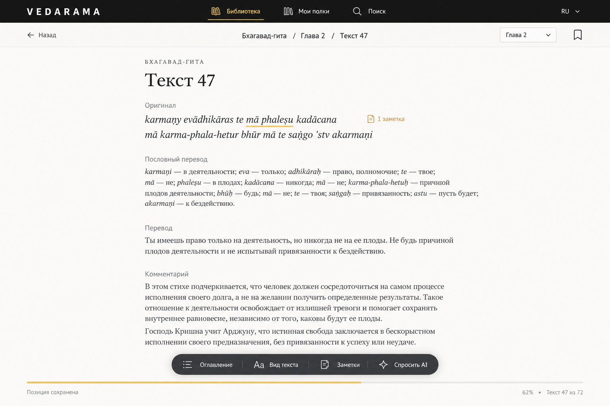
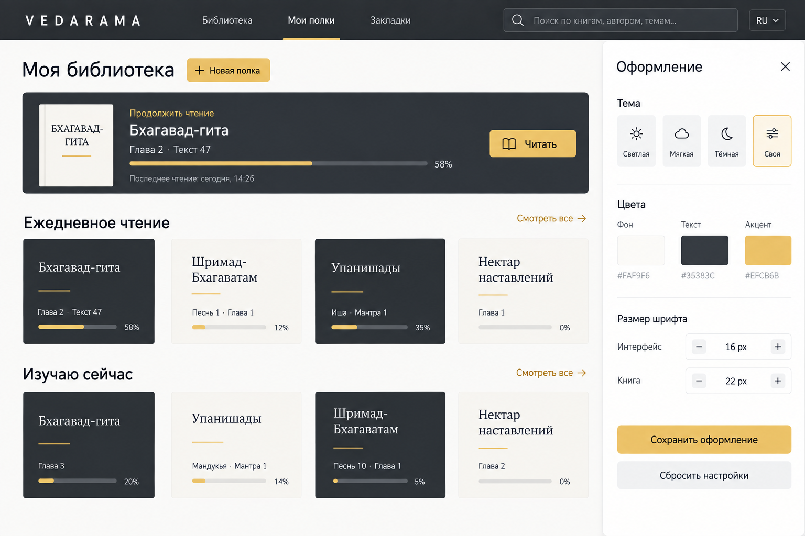
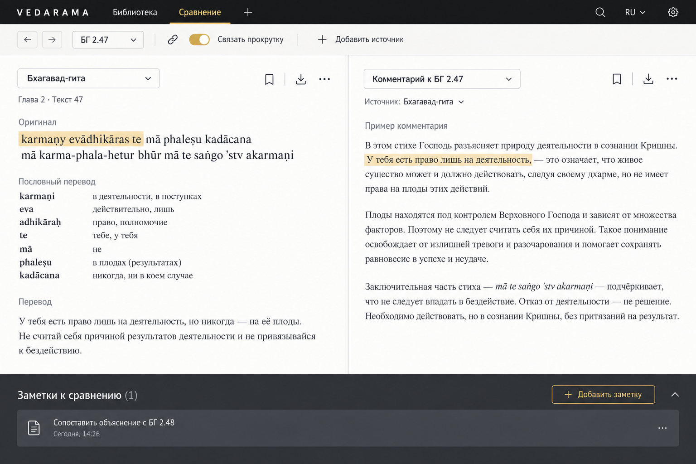
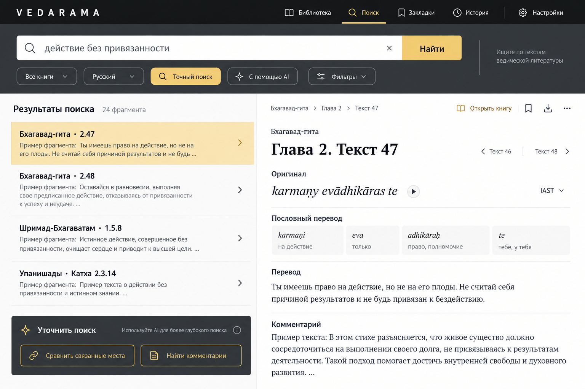
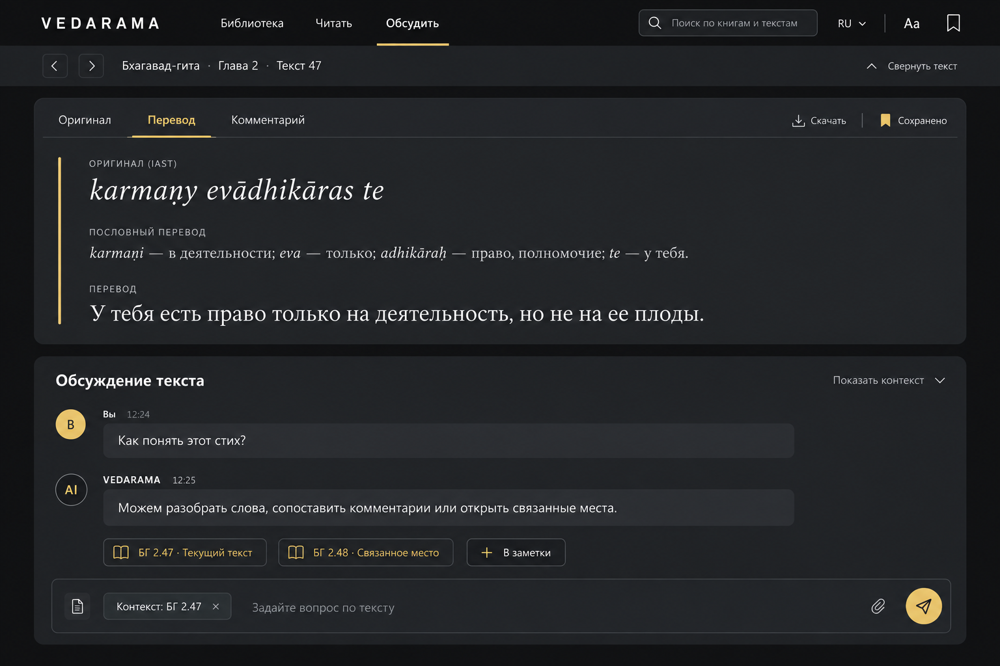
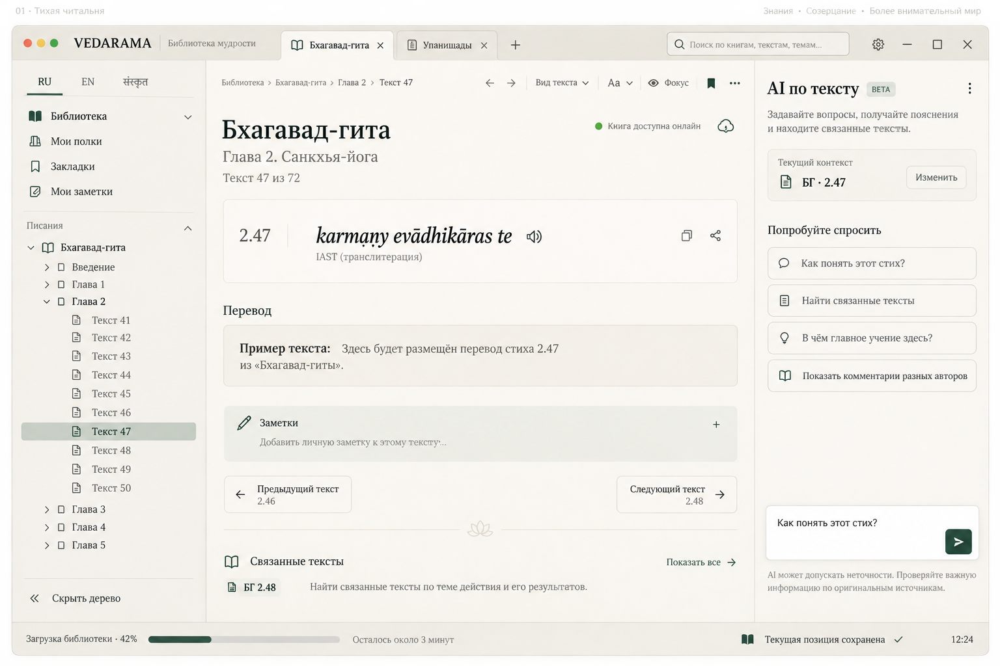
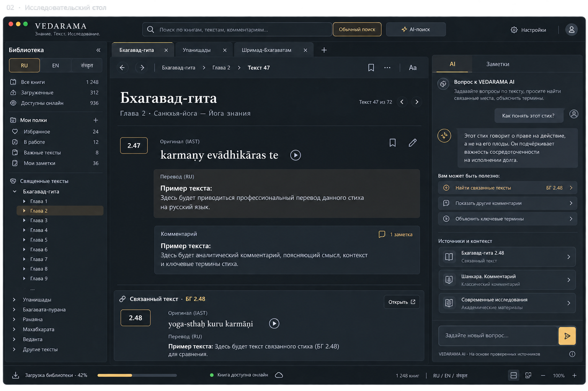
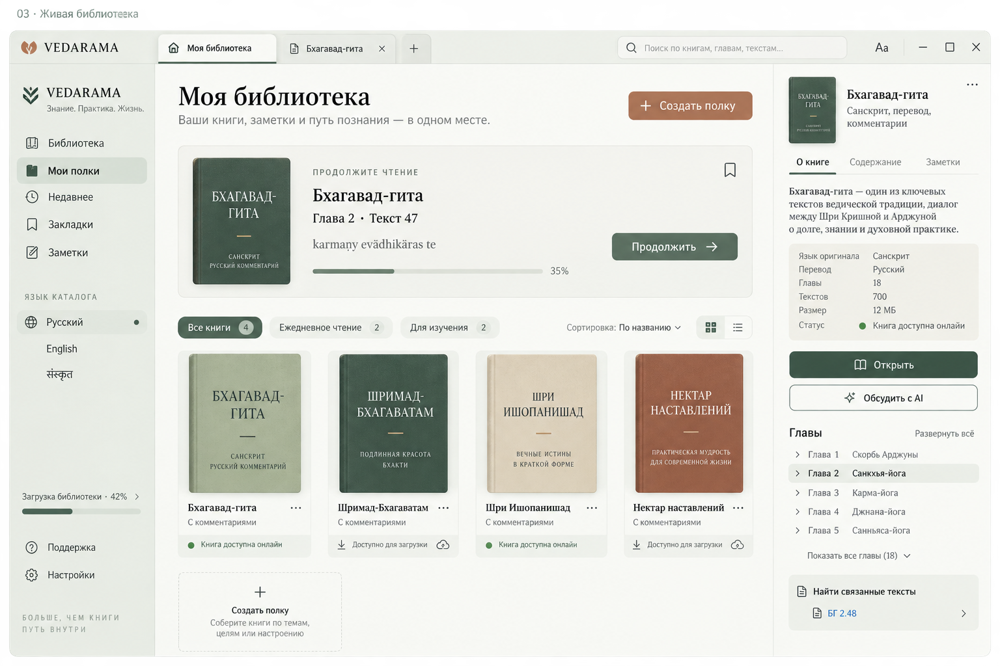
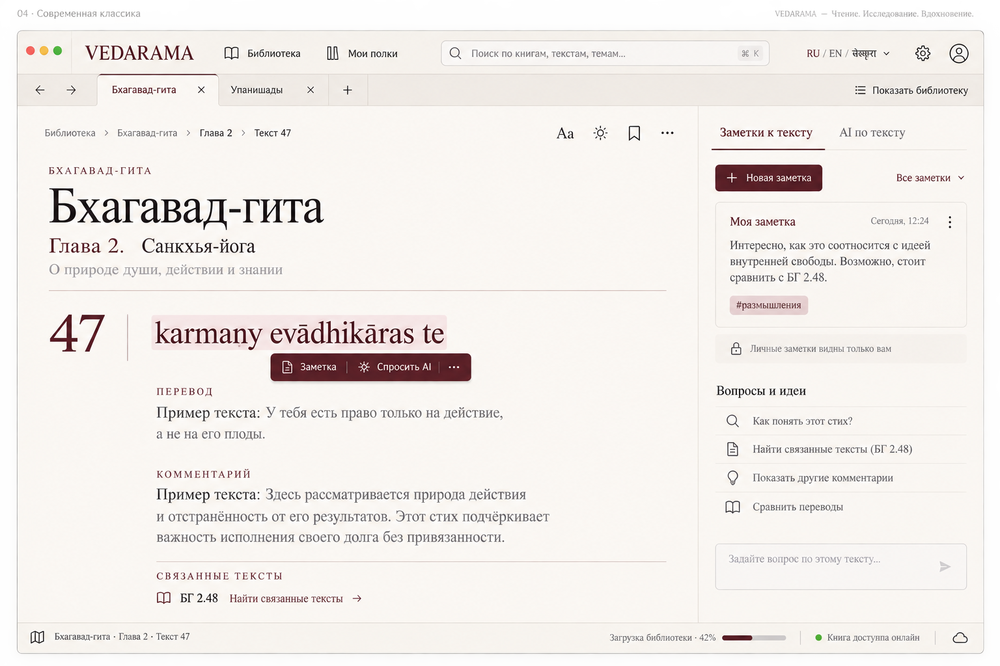
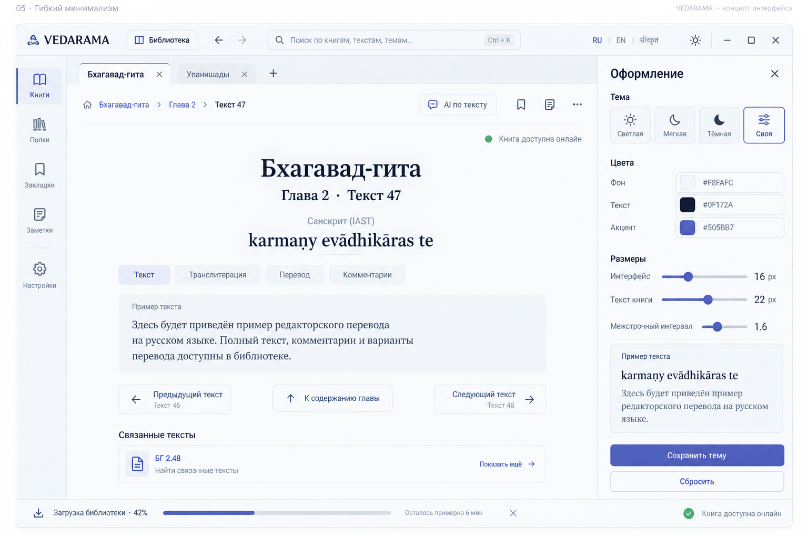

КОНЦЕПТ 06
Открытая книга
Чтение без боковых панелей: горизонтальная навигация, заметки на полях и компактные инструменты.
Открыть в полном размере ↗Логотип, графит и золото сохраняют узнаваемость Ведарамы. Пять новых концептов предлагают разные способы читать, собирать книги и исследовать тексты.

Чтение без боковых панелей: горизонтальная навигация, заметки на полях и компактные инструменты.
Открыть в полном размере ↗
Личные полки и продолжение чтения на главном экране; оформление настраивается в отдельной панели.
Открыть в полном размере ↗
Два источника рядом, отдельная навигация по каждому и общая полоса заметок.
Открыть в полном размере ↗
Найденные фрагменты и выбранный источник на одном экране; AI помогает уточнять поиск.
Открыть в полном размере ↗
Тёмный экран с текстом сверху и обсуждением под ним; контекст вопроса всегда виден.
Открыть в полном размере ↗
Мягкий фон, зелёный акцент и просторная область чтения.
Открыть в полном размере ↗
Работа с текстом, источниками и контекстным AI.
Открыть в полном размере ↗

Книжная типографика и заметки на полях. Первоначальный концепт 4.
Открыть в полном размере ↗
Настройка цветов, размеров шрифтов и оформления под себя.
Открыть в полном размере ↗